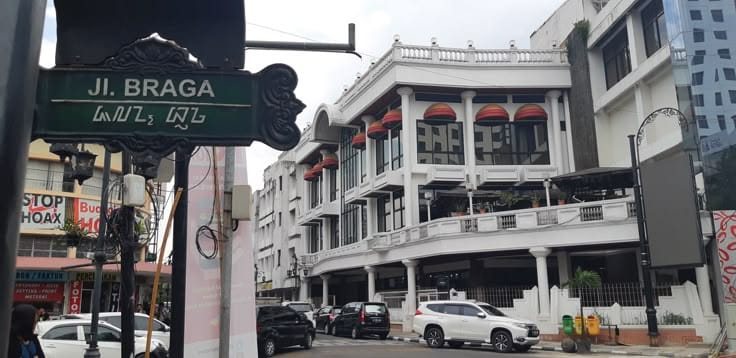
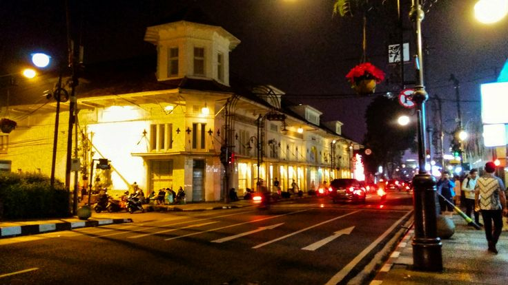
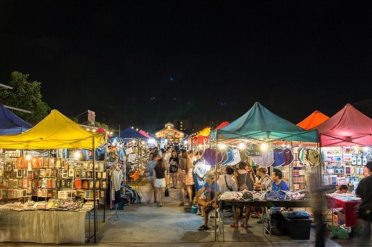
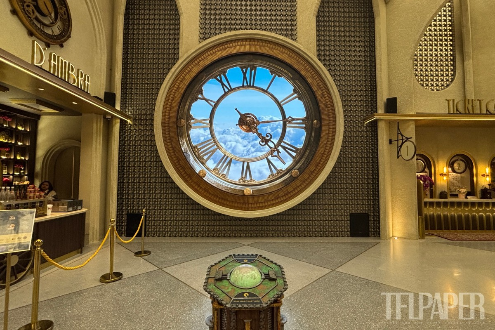

TUR PUSAT KOTA




Tur ini mengajak peserta mendalami perpaduan sejarah kolonial dan inovasi modern di jantung Kota Bandung. Perjalanan dimulai dengan menyusuri kawasan Asia Afrika untuk mengamati arsitektur Art Deco dan mengunjungi Museum Konferensi Asia Afrika yang bersejarah. Eksplorasi dilanjutkan ke Jalan Braga, pusat kreativitas kota yang dipenuhi galeri seni lukis dan kafe bergaya vintage. Sebagai poin utama yang futuristik, peserta akan mengunjungi Skyward Project di rooftop 23 Paskal Shopping Center. Tempat ini menawarkan taman petualangan bertema Steampunk yang menggabungkan instalasi seni interaktif seperti The Golden Zeppelin dengan wahana pemacu adrenalin seperti Khaliki Mountain Slides dan zipline urban Flying Fox. Perjalanan ditutup dengan petualangan kuliner malam di Sudirman Street Night Market untuk menikmati keragaman makanan khas lokal di tengah suasana kota yang hidup.
Rincian Perjalanan
| WAKTU | KEGIATAN | DESKRIPSI |
|---|---|---|
| 09.00 | Penjemputan | Pertemuan di titik temu yang ditentukan dan mobilisasi menuju titik nol kilometer Bandung. |
| 09.30-12.00 | Historical Walk Asia Afrika | Kunjungan ke Museum KAA dan aktivitas fotografi di sepanjang jalur pedestrian bersejarah. |
| 12.00-14.30 | Lunch & Explore Braga | Makan siang di restoran legendaris dan eksplorasi galeri seni serta kafe estetik di kawasan Braga. |
| 14.30-17.30 | Immersive Adventure di Skyward Project | Menuju 23 Paskal untuk menikmati instalasi The Golden Zeppelin, meluncur di Khaliki Mountain Slides, dan mencoba wahana Flying Fox di atas rooftop. |
| 17.30-19.00 | Street Food Adventure | Wisata kuliner malam di kawasan Sudirman Street yang interaktif dan meriah. |
| 19.00-20.00 | Perjalanan Pulang | Pengantaran kembali ke lokasi penjemputan/hotel dan rangkaian tur berakhir. |
INFORMASI BOOKING
| Tur | : | Pusat Kota |
| Destinasi | : | Asia Afrika, Jalan Braga, Skyward Project (23 Paskal), Sudirman Street |
| Durasi Tur | : | 11 Jam |
| Jam Operasional | : | 09.00-20.00 |
| Fasilitas | : | Tiket Masuk, Air Mineral, Snacks, Parkir, Dokumentasi |
| Harga | : | Rp 375.000 - Rp 575.000 / Pax (tergantung jumlah partisipan) |